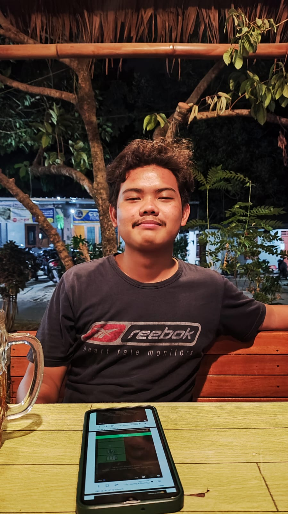

Loading...
Testimonial
Testimonial
Our testimonion
Burjo Banjarsari sangat rekomenadasi buat makan banyak

Michael Alvindo Marbun
Mahasiswa Teknik GeodesiMakanan Burjo Sami Raos enak dan cocok buat mabar
Garin Aprilino Matondang
Mahasiswa Teknik GeodesiBurjo Titik Kumpul enak buat nugas karena jaringan wifinya kencang

Hilmy Aziz
Mahasiswa Teknik GeodesiBurjo BP enak buat nongkrong dan rapat